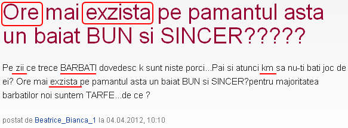

Beatrice Bianca, o cititoare a revistei online Garbo, renumită pentru titlurile inspirate, loveşte văzduhul cu o preocupare profundă, legată de bărbaţi, femei, târfe şi porci. Domniţa întrebătoare e sofisticată, deci scrie stricat şi apăsat, pe forumul Garbo.
Dacă trăiţi cu impresia că site-ul TPU.ro e epicentrul prostiei, locul unde cele mai stupide întrebări primesc răspunsurile imbecile pe care le merită, înseamnă că n-aţi parcurs o publicaţie de lifestyle feminin. În afara renumitelor ghiduri tip “ciocofon în 8 paşi” sau “alege mielul în funcţie de zodie”, vă puteţi delecta cu secţiunea interactivă, unde cititoarele întreabă cam aşa:

“Egzistă” au ba? Şi dacă “ex-zistă” pe pământ, de ce nu i se arată şi Biancăi Beatrice? Observaţi că porcirea bărbaţilor e un fenomen evolutiv, se produce “pe zi ce trece”. Azi apare râtul umed, mâine un pic de şorici aspru, apoi o codiţă ca un sfredel. Şi uite aşa bărbatul se transformă, zi după zi, în entitatea de care trebuie să-ţi baţi joc. Că d-aia sunt porcii făcuţi, să-ţi baţi joc de ei kilometri (km) întregi, scop în care te antrenezi masacrând, mai întâi, limba română şi logica.
Beatrice Bianca răscoleşte pământul în căutarea unui individ “bun şi sincer”. În rest, poate fi urât, sărac, bătrân, zgârcit, însurat şi idiot. Important e să-i pară Biancăi băiat (nu bărbat, aceia sunt râmători) milostiv şi onest.
“De ce pentru majoritatea bărbaţilor noi suntem târfe?” e întrebarea care chiar te pune pe gânduri. Păi chiar aşa, de ce pentru majoritate? De ce n-am fi târfe doar pentru o minoritate? De ce n-am fi doar pentru noi înşine? N-ar putea fi şi curvia asta mai selectivă? Aici, cititoarea revistei Garbo are dreptate. E natural să-şi dorească identificarea unei nişe pe care să se poziţioneze. În plus, democratic gândind, opinia majorităţii e lege, deci e cam greu de combătut.
Cum era de aşteptat, aspectele fundamentale puse în discuţie de clienta site-ului Garbo.ro au fost amplu dezbătute în comunitate (discuţia e aici). Evident, nimeni nu i-a semnalat Biancăi faptul că unii dintre porci ştiu alfabetul şi vor guiţa îngroziţi văzând cum scrie domnişoara. Chiar aşa, care e ordinea firească a priorităţilor: întâi înveţi limba română şi apoi te avânţi în bătălia sexelor sau invers?


ile")

{kind=link}
Între bărbați și femei totul e o mare neînțelegere, iar neînțelegerea e amplificată atunci când Biăncile lumii înțeleg atât de puține lucruri, unul din ele fiind logica elementară sau gramatica limbii din țara în care s-au născut
Neînţelegere este, intr-adevăr, cuvâtul cheie.
De exemplu, nu înţelegem de ce insistă Biăncile garbofile să abordeze teme grele când ele n-au trecut nici de primele file ale abecedarului. Procedând astfel, validează chiar ipotezele misogine!
looool asta e din categoria “Gandire cu premeditare”: barbatii e porci si femeile cu…ve!
Comments on this entry are closed.